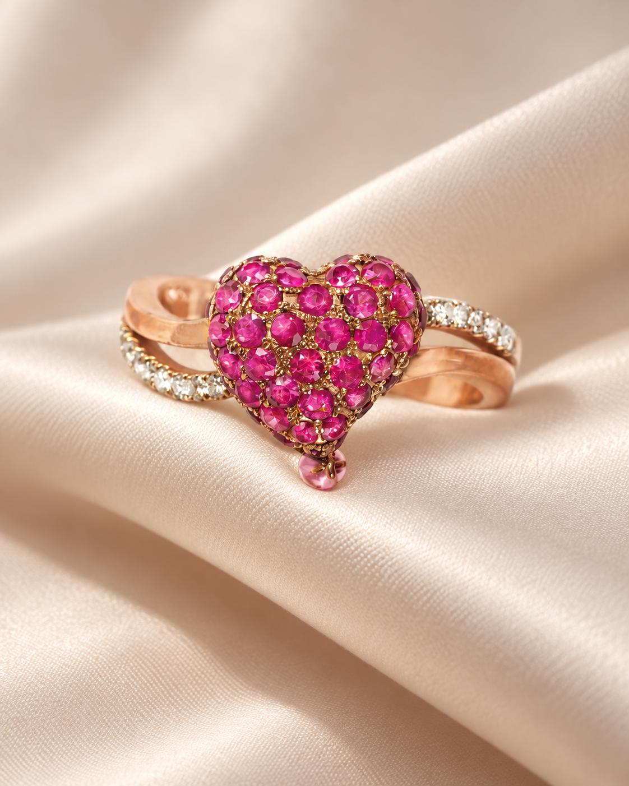

BELLA’S PICK
BELLA’S PICK天然粉紅珠母貝《櫻花》項鏈
NT$ 6,980

從一顆珍珠，到一件值得典藏的珠寶。
音樂家 Bella 陳姿吟，為你的日常譜曲。

MUSIC · MEMORY · JEWELRY從輕盈日常，到值得傳承的典藏。
找到屬於你的那段旋律。
純銀、淡水珍珠與天然半寶石的細膩心意。
 BELLA CHEN TZU YIN / MUSICIAN & DESIGNER
BELLA CHEN TZU YIN / MUSICIAN & DESIGNER在成為珠寶設計師之前，她是一位雙簧管演奏家。音符、琴鍵與提琴，從舞台走進日常，成為一件件可以戴在身上的作品。
閱讀 Bella 的故事↗新光三越天母一館 1F ｜ 台北市天母東路 68 號 ｜ 0958-331-689